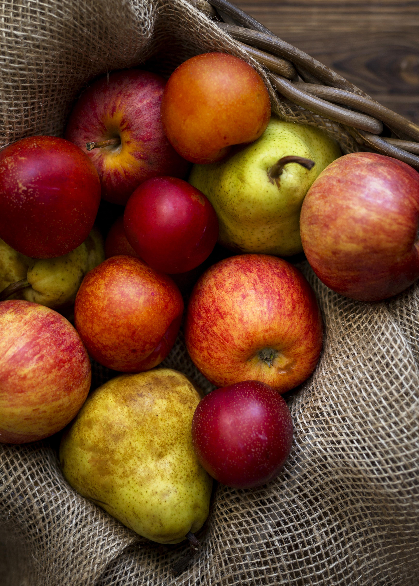

El Legado de la Manzana: Fruto de Historia y Bienestar
Hoy en día la manzana representa algo diferente para cada persona; dentro de las distintas variedades
encontramos la dulzura de la Fuji, la acidez de la Granny Smith o el equilibrio de la Gala, que
hacen
referencia a un sabor familiar, un recuerdo de la infancia o simplemente un hábito saludable.
También
hay leyendas que hacen referencia a su importancia histórica, desde mitologías antiguas hasta ser un
icono del conocimiento, una ideología de vida sana o una frase con la cual quien la consume se
siente
identificado como alguien que valora lo natural y esencial en su rutina diaria.
Por otra parte podemos encontrar representaciones gráficas de manzanas en el diseño y la tecnología
que
demuestran la admiración por su simetría y simplicidad, y de cierta manera el compromiso humano por
preservar la biodiversidad de los pomares que nos ofrecen las distintas zonas geográficas en cuanto
a la
variedad de este fruto. Aun así, depende del significado que cada persona le dé a la manzana, ya sea
un
uso puramente nutricional o simbólico, ya que, ver una manzana para el sujeto significa otra cosa si
lo
toma desde el lado artístico o el lado estrictamente dietético.
La manzana no cambia el carácter de las personas, es solo un recurso buscado para demostrar una serie
de
ideales de bienestar personal y su deseo de exteriorizarlo mediante una vida equilibrada. En la
actualidad la sociedad moderna comienza a aceptar la manzana como un elemento fundamental fuera de
una
tendencia pasajera, evitando verla como una simple fruta de escritorio e incluso tomándola como un
simbolismo de la frescura y la renovación constante de cada ser humano.
Gran parte del avance del mundo es la valoración que se ha tenido al aprender a producir y admirar
este
fruto; para los agricultores el cultivo de la manzana dejó de ser una "tarea simple" desde hace
mucho
tiempo y hasta resulta algo incómodo para ellos que aún hoy en día haya personas que no aprecien el
esfuerzo de su cosecha, pues así como ellos afirman esto es un trabajo y un estilo de vida que
alimenta
al mundo. La manzana se ha convertido en parte de la vida cotidiana y algo más allá de la dieta,
pues
para la mayoría no es simplemente un antojo momentáneo sino también algo que los acompañará toda su
vida, de tal manera es algo para disfrutar y admirar siendo casi una pieza más de su identidad, pues
está reemplazando snacks procesados o simplemente complementando la salud de la persona.

La Vibrante Esencia de los Cítricos en Nuestro Mundo
Hoy en día los cítricos representan mucho más que solo un alimento en nuestra dieta; son pilares de
la
salud, la gastronomía y la cultura. Dentro de sus diversas variedades encontramos la dulzura de la
naranja, el toque ácido del limón que realza infinidad de platillos, la refrescante amargura del
pomelo,
o la exótica fragancia de la lima, cada uno aportando un perfil único que despierta los sentidos y
beneficia el organismo de múltiples maneras. Hay leyendas urbanas que incluso atribuyen a su consumo
diario un impacto directo en el estado de ánimo y la vitalidad, y su presencia en dietas
equilibradas es
un ícono de bienestar y prevención.
Por otra parte, podemos encontrar representaciones gráficas de los cítricos en el arte y la
decoración,
demostrando la admiración por su belleza y su vibrante colorido, así como su importancia en la
agricultura sostenible y el compromiso por preservar la diversidad genética de estas maravillosas
frutas. Aún así, depende del significado que cada persona le dé a un cítrico, ya sea por su uso
culinario o sus propiedades medicinales, ya que, por ejemplo, el limón puede ser visto como un
simple
aderezo o como un potente desintoxicante natural.
Los cítricos no cambian el carácter de las personas, pero su consumo diario es un hábito buscado para
demostrar un deseo de cuidar la salud y exteriorizar una preferencia por sabores frescos y
naturales. En
la actualidad, la sociedad moderna comienza a aceptar a los cítricos no solo como frutas versátiles,
sino como elementos esenciales en la farmacopea natural y la cosmética, evitando verlos solo como
productos estacionales e incluso tomándolos como un simbolismo de vitalidad y pureza.
Gran parte del avance del mundo es la tolerancia que se ha tenido al aprender a aceptar y admirar
este
arte de la naturaleza. Para los agricultores y chefs, el tema de los cítricos dejó de ser algo
"básico"
desde hace mucho tiempo y hasta resulta algo incómodo para ellos que aún hoy en día haya personas
que no
aprecian su complejidad, pues así como ellos afirman esto es un trabajo y un estilo de vida sin
hacerle
mal a nadie. Los cítricos se han convertido en parte de la vida cotidiana y algo más allá de la
moda,
pues para la mayoría no es simplemente un capricho momentáneo sino también algo con lo que convivirá
el
resto de su vida, de tal manera es algo para mostrar y admirar siendo casi un elixir más de la
naturaleza, pues está reemplazando de alguna manera medicamentos o simplemente complementando la
apariencia de la persona con una piel más sana y radiante.